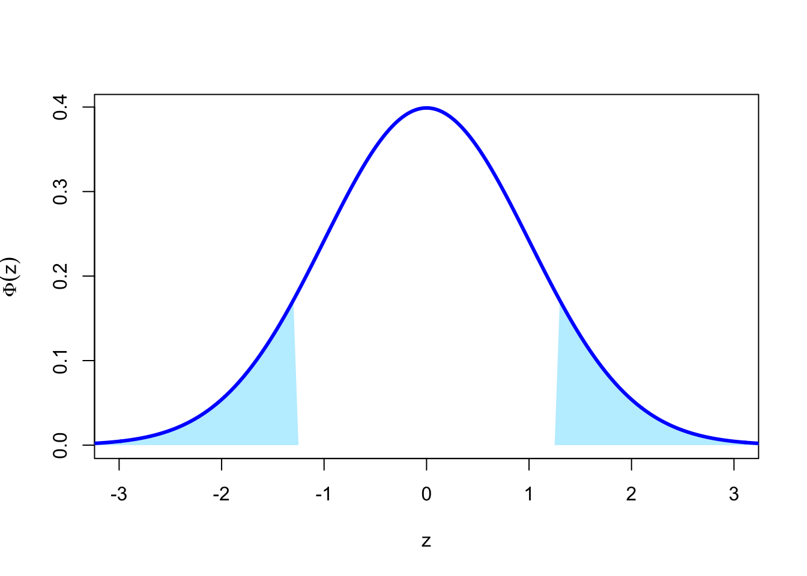

Section 9 Normal distribution
9.1 Definition of the normal distribution
There’s one very important distribution we need to talk about, which is the so-called “normal” (or “Gaussian”) distribution.
Definition 9.1 If \(X\) is a continuous random variable with PDF \[ f_X(x) = \frac{1}{\sqrt{2\pi\sigma^2}} \exp \left( - \frac{(x - \mu)^2}{2\sigma^2} \right) , \] then we say that \(X\) has the normal distribution with expectation \(\mu\) and variance \(\sigma^2 > 0\), and write \(X \sim \mathrm N(\mu,\sigma^2)\).
(Many people call \(\mu\) the “mean”, which is a slight misnomer.)
This PDF is the famous “bell curve”, where the centre of the bell is at \(x = \mu\) and the width of the bell is controlled by the value of \(\sigma^2\). Note also that the PDF is symmetric about \(\mu\).

One important special case is \(\mu = 0\) and \(\sigma^2 = 1\), in which case we say that \(Z \sim \mathrm N(0,1)\) has the standard normal distribution. We typically write \(\phi\) (lower-case “phi”), where \[ \phi(z) = \frac{1}{\sqrt{2\pi}} \mathrm e^{-z^2/2} \] for the PDF of a standard normal distribution, and write \(\Phi\) (upper-case “Phi”), where \[ \Phi(z) = \mathbb P(Z \leq z) = \frac{1}{\sqrt{2\pi}} \int_{-\infty}^z \mathrm e^{-y^2/2}\, \mathrm dy \] for the CDF of a standard normal distribution.
The normal distribution is a very widely used distribution for modelling many things in real life.
- Measurement error with scientific instruments is typically modelled as a normal distribution with expectation \(\mu = 0\). The more precise the instrument, the lower the value of the variance \(\sigma^2\).
- According to a poll a few years ago, the height of MATH1712 students in centimetres can be modelled well by a normal distribution with expectation \(\mu = 172\) and variance \(\sigma^2 = 86\).
- In financial models, it is often assumed that the logarithm of the daily change in a stock price follows a normal distribution. In this context, the expectation \(\mu\) is known as the “drift” and the standard deviation \(\sigma\) as the “volatility”. This “log-normal” model is the basis of the famous Black–Scholes model of financial markets.
More generally, and for reasons we will come back to later, the normal distribution is good for modelling things where lots of little effects add together to make a bigger effect. We will also see later that many other distributions can be approximated by a normal distribution.
It’s generally difficult, or even impossible, to directly calculate probabilities of events concerning the normal distribution. Instead, one must use numerical approximations. We will discuss these further later in this section.
9.2 Properties of the normal distribution
Theorem 9.1 Let \(X \sim \mathrm{N}(\mu, \sigma^2)\) be a normally distributed random variable. Then:
- \(f_X(x)\) is indeed a PDF, in that \(\displaystyle\int_{-\infty}^\infty f_X(x)\,\mathrm dx = 1\);
- \(\mathbb EX = \mu\);
- \(\operatorname{Var}(X) = \sigma^2\).
In particular, if \(Z \sim \mathrm{N}(0, 1)\) is a standard normal distribution, then \(\mathbb EZ = 0\) and \(\operatorname{Var}(Z) = 1\).
We’ll give (non-examinable) proofs of these soon. But first we’ll note one other thing.
Let \(X \sim \mathrm{N}(\mu, \sigma^2)\), and consider the random variable \(Y = aX + b\). Then we know that \[\begin{align*} \mathbb E(aX + b) &= a\mu + b , \\ \operatorname{Var}(aX + b) &= a^2 \sigma^2 . \end{align*}\] In fact, it can be shown that \(aX + b\) is normally distributed too; that is, \(aX + b \sim \mathrm{N}(a\mu + b, a^2 \sigma^2)\). Importantly, if we take \(a = 1/\sigma\) and \(b = -\mu/\sigma\), then we see that \[ Z = \frac{X - \mu}{\sigma} \sim \text{N} (0, 1) . \] In other words, we can stretch and scale any normal random variable to turn it into a standard normal random variable. This is known as “standardisation” and will be useful later.
We can also use standardisation to help us prove Theorem 9.1.
Proof. (Non-examinable) By using standardisation, it suffices to prove the theorem for a standard normal random variable \(X \sim \mathrm{N}(0,1)\).
For part 1, we need to show that \[ I = \frac{1}{\sqrt{2\pi}} \int_{-\infty}^\infty \mathrm e^{-x^2/2}\, \mathrm dx = 1 . \] To prove this we use one of the most outrageous tricks in mathematics! The first part of the trick is that, instead of calculating the integral itself \(I\), we can instead calculate the square of the integral \(I^2\), which we also need to show is equal to 1. This is \[\begin{align*} I^2 &= \frac{1}{\sqrt{2\pi}} \int_{-\infty}^\infty \mathrm e^{-x^2/2}\, \mathrm dx \times \frac{1}{\sqrt{2\pi}} \int_{-\infty}^\infty \mathrm e^{-y^2/2}\, \mathrm dy\\ &= \frac{1}{2\pi} \int_{-\infty}^\infty \int_{-\infty}^\infty \mathrm e^{-x^2/2}\,\mathrm e^{-y^2/2} \, \mathrm dx\, \mathrm dy \\ &= \frac{1}{2\pi} \int_{-\infty}^\infty \int_{-\infty}^\infty \mathrm e^{-(x^2+y^2)/2}\,\mathrm dx\, \mathrm dy . \end{align*}\] The second part of the outrageous trick is notice that the appearance of \(x^2 + y^2\) suggests it might be useful to transfer from cartesian coordinates \((x,y)\) to polar coordinates \((r, \theta)\). Recalling that \(x^2 + y^2 = r^2\) and \(\mathrm dx\, \mathrm dy = r\, \mathrm dr \,\mathrm d\theta\), we have \[\begin{align*} I^2 &= \frac{1}{2\pi} \int_{0}^{2\pi} \int_{0}^\infty \mathrm e^{-r^2/2}\,r\,\mathrm dr\, \mathrm d\theta \\ &= \frac{1}{2\pi} \, 2\pi\int_{0}^\infty r\, \mathrm e^{-r^2/2}\,\mathrm dr \\ &= \left[ -\mathrm e^{-r^2/2} \right]_0^\infty \\ &= - 0 -(-1) \\ &= 1 , \end{align*}\] and we’re done.
For part 2, we need to show that \(\mathbb EX = 0\). We have \[\begin{align*} \mathbb EX &= \frac{1}{\sqrt{2\pi}} \int_{-\infty}^{\infty} x\, \mathrm e^{-x^2/2}\, \mathrm dx \\ &= \frac{1}{\sqrt{2\pi}} \left[-\mathrm e^{-x^2/2}\right]_{-\infty}^\infty \\ &= -0 - (-0) \\ &= 0 , \end{align*}\] as required.
For part 3, we need to show that \(\mathbb EX^2 = 1\). Using integration by parts with \(u = x\), \(v' = x\,\mathrm e^{-x^2/2}\), we have \[\begin{align*} \mathbb EX^2 &= \frac{1}{\sqrt{2\pi}} \int_{-\infty}^{\infty} x^2\, \mathrm e^{-x^2/2}\, \mathrm dx \\ &= \frac{1}{\sqrt{2\pi}} \left[-x \mathrm e^{-x^2/2}\right]_{-\infty}^\infty + \frac{1}{\sqrt{2\pi}} \int_{-\infty}^\infty \mathrm e^{-x^2/2} \, \mathrm dx \\ &= 0 + \frac{1}{\sqrt{2\pi}} \int_{-\infty}^\infty \mathrm e^{-x^2/2} \, \mathrm dx . \end{align*}\] But this integral on the right is just the integral \(I\) of the PDF as above, which we know equals 1, as required.
There is one last property of the normal distribution that we won’t use directly in this module, but is perhaps worth knowing anyway.
Theorem 9.2 If \(X \sim \mathrm{N}(\mu_X, \sigma^2_X)\) and \(Y\sim \mathrm{N}(\mu_Y, \sigma^2_Y)\) are independent, then \[ X+Y \sim \mathrm{N}(\mu_X + \mu_Y, \sigma^2_X+\sigma^2_Y) . \]
9.3 Calculations using R
We will try to answer a number of questions about the normal distribution.
Question 1. A fiberoptic fibre is manufactured with an average width of 8 nanometres (nm), with a standard deviation of 0.04 nm. Fibres that are wider than 8.1 nm fail testing and must be discarded. If the manufactured width is modelled as normally distributed, then what proportion of fibres pass the test?
Let \(X \sim \mathrm{N}(8, 0.04^2)\) denote the width of a random fibre, measured in nanometres. Then this question required us to find \[ F(8.15) = \mathbb P(X \leq 8.1) = \frac{1}{\sqrt{2\pi\times 0.04^2}} \int_{-\infty}^{8.1} \exp \left(-\frac{(x - 8)^2}{2\times 0.04^2} \right) \, \mathrm dx . \]
Unfortunately, it is not possible to calculate this integral exactly. However, computers can approximate this integral very accurately and very quickly. In R, this is done with the pnorm() function, which calculates the CDF of a normal distribution. pnorm() typically takes three arguments:
- the first argument is the value \(x\) at which we wish to evaluate the CDF;
- the second argument is the expectation \(\mu\) of the normal distribution;
- the third argument is the standard deviation \(\sigma\) of the normal distribution. (Note that this third argument is the standard deviation \(\sigma\) and not the variance \(\sigma^2\). This is an easy mistake to make!)
So here, the number we want is
pnorm(8.1, 8, 0.04)## [1] 0.9937903We see that roughly 99.4% of fibres pass the test.
Question 2. Let \(Z \sim \mathrm{N}(0,1)\). What is \(\mathbb P(Z \leq 1.45)\)?
This is asking for \(\Phi(1.45) = \mathbb P(Z \leq 1.45)\). This is:
pnorm(1.45, 0, 1)## [1] 0.9264707But in fact, the standard normal distribution CDF \(\Phi\) is so common that R allows you to omit the values of \(\mu\) and \(\sigma\) if they are 0 and 1 respectively. So you can save yourself a few keystrokes by simply writing:
pnorm(1.45)## [1] 0.9264707Question 3. Let \(Z \sim \mathrm{N}(0,1)\). What is \(\mathbb P(Z > 0.33)\)?
This is asking for the upper-tail probability. The direct way to get R to solve this is to use the lower.tail = FALSE option that we discussed in R Worksheet 7. That is, we use:
pnorm(0.33, lower.tail = FALSE)## [1] 0.3707Alternatively, we could use the fact that \(\mathbb P(Z > z) = 1 - \mathbb P(Z \leq z) = 1 - \Phi(z)\). Then we could equally well calculate this as
1 - pnorm(0.33)## [1] 0.3707Question 4. We return to the fiberoptic model \(X \sim \mathrm{N}(8, 0.04^2)\) from Question 1. Fibres can be awarded a special “high quality” stamp if their width is between 7.95 and 8.05 nm. What proportion of these fibres qualify?
This is asking for \(\mathbb P(7.95 \leq X \leq 8.05)\). But we can calculate this as \[ \mathbb P(7.95 \leq X \leq 8.05) = \mathbb P(X \leq 8.05) - \mathbb P(X < 7.95) = F(8.05) - F(7.95) .\] (Formally, this is because \[ \{X < 7.95\} \cup \{7.95 \leq X \leq 8.05\} = \{X \leq 8.05\} \] is a disjoint union, so we can use Axiom 3.)
So the proportion of qualifying fibres is
mu <- 8
sigma <- 0.04
pnorm(8.05, mu, sigma) - pnorm(7.95, mu, sigma)## [1] 0.7887005or about 79%.
Question 5. We stay with the fiberoptic model \(X \sim \mathrm{N}(8, 0.04^2)\) from Questions 1 and 4. The manufacturer wants to be able to advertise that 99.9% of their fibres are between lower and upper limits \(x\) and \(y\). What values of \(x\) and \(y\) can they promise?
Is \(F\) is the CDF of this distribution, then we are looking for \(x\) and \(y\) such that \(F(x) = 0.0005\) and \(F(y) = 0.9995\). That way, \(F(y) - F(x) = 0.999\), so we have 99.9% of fibres within that interval and 0.05% outside either side.
You may remember from R Worksheet 7 that the inverse \(F^{-1}\) of the CDF is called the quantile function. Here, we want \(F^{-1}(0.0005)\) and \(F^{-1}(0.9995)\). The quantile function for the normal distribution in R is qnorm(). (It also has a lower.tail = FALSE option, which is sometimes useful.) So we can use
mu <- 8
sigma <- 0.04
c(qnorm(0.0005, mu, sigma), qnorm(0.9995, mu, sigma))## [1] 7.868379 8.131621We see that we can guarantee that 99.9% of fibres are between roughly 7.87 and 8.13 nm wide.
9.4 Calculations using statistical tables
Doing normal calculations with R is all very well. But what if you accidentally built a time machine and got transported back to Victorian times. Then how would you perform calculations with the normal distribution?
In the olden days, someone would (using some enormous computer the size of a room, or whatever) calculate lots of values of \(\Phi(x)\), the CDF of the standard normal distribution, and publish them in a book of statistical tables. An example of this is this page of normal distribution tables [PDF] that will appear on the final page of your exam. (Like the Victorian times, your exam is another place R will not be available but statistical tables will be.)
We will return to the same questions we answered in the previous subsection, although in a slightly different order.
Question 2. Let \(Z \sim \mathrm{N}(0,1)\). What is \(\mathbb P(Z \leq 1.45)\)?
As we noted before, this is asking for \(\Phi(1.45) = \mathbb P(Z \leq 1.45)\). Consulting the statistical tables, we see that the value of \(\Phi(1.45)\) is listed on the table. Specifically, we see from column 3, row 10 of Table 1 that \(\Phi(1.45) = 0.9265\). This is the same value as we got from R (although we get fewer decimal places from the table).
Question 1. A fiberoptic fibre is manufactured with an average width of 8 nanometres (nm), with a standard deviation of 0.04 nm. Fibres that are wider than 8.1 nm fail testing and must be discarded. If the manufactured width is modelled as normally distributed, then what proportion of fibres pass the test?
If \(X \sim \mathrm{N}(8, 0.04^2)\), then this asks for \(F_X(8.1) = \mathbb P(X \leq 8.1)\). However, unfortunately the statistical tables only have the CDF \(\Phi\) for the standard normal distribution \(\mathrm N(0,1)\). So we are going to have “standardise” \(X\); that is, convert \(X\) to a standard normal distribution. Recall from above that we standardise a normal random variable by subtracting the expectation \(\mu\) and dividing by the standard deviation \(\sigma\). So in this case, we have \[ Z = \frac{X - \mu}{\sigma} = \frac{X - 8}{0.04} \sim \mathrm{N}(0,1) . \]
Using this, we can write \[ \mathbb P(X \leq 8.1) = \mathbb P \left(\frac{X - 8}{0.04} \leq \frac{8.1 - 8}{0.04}\right) = \mathbb P(Z \leq 2.5) = \Phi(2.5). \] We can then look up \(\Phi(2.5)\) in Table 1. We see from the first row of the last column that \(\Phi(2.5) = 0.9938\). This matches the answer we got from R.
Question 3. Let \(Z \sim \mathrm{N}(0,1)\). What is \(\mathbb P(Z > 0.33)\)?
The statistical tables only have \(\Phi(z) = \mathbb P(Z \leq z)\). But as we noted above, \(\mathbb P(Z > 0.33) = 1 - \Phi(0.33)\). The tables don’t have \(\Phi(0.33)\) either, though, because they jump straight from \(\Phi(0.30)\) to \(\Phi(0.35)\). We have two choices of what to do here.
First choice, which is appropriate when an approximate answer will suffice, is simply to take the nearest value in the table, which here is \(0.35\). Hence \[ \mathbb P(Z > 0.33) = 1 - \Phi(0.33) \approx 1 - \Phi(0.35) = 1 - 0.6368 = 0.3632 . \] This is pretty close to the true answer \(0.3707\) we saw before: about a 2% error.
Second choice, which is more work but gets a more accurate answer, is to use interpolation. We know from the table that \(\Phi(0.30) = 0.6179\) and \(\Phi(0.35) = 0.6368\). To “interpolate”, we assume that the graph of \(\Phi\) follows a straight line between \((0.30, 0.6179)\) and \((0.35, 0.6368)\). (In fact, \(\Phi\) has a slightly curve, so isn’t quite straight.) As the statistical tables state, the interpolation is to take \[ \Phi(x) = \frac{x_2 - x}{x_2 - x_1} \Phi(x_1) + \frac{x - x_1}{x_2 - x_1} \Phi(x_2) .\] In our case, if we take \(x_1 = 0.30\) and \(x_2 = 0.35\) as the interpolation points for \(x = 0.33\), we get the approximation \[ \Phi(0.33) = 0.4 \Phi(0.30) + 0.6 \Phi(0.35) = 0.4\times 0.6179 + 0.6 \times 0.6368 = 0.6292 \] This is off by only 0.01%; a very accurate approximation.
On problem sheets or in the exam, you will be told if an interpolation is necessary.
Question 4. We return to the fiberoptic model \(X \sim \mathrm{N}(8, 0.04^2)\) from Question 1. Fibres can be awarded a special “high quality” stamp if their width is between 7.95 and 8.05 nm. What proportion of these fibres qualify?
As noted above, this is asking for \(\mathbb P(7.95 \leq X \leq 8.05)\). To allow us to use our statistical tables, we will have to standardise. We get \[\begin{align*} \mathbb P(7.95 \leq X \leq 8.05) &= \mathbb P \left(\frac{7.95 - 8}{0.04} \leq \frac{X - 8}{0.04} \leq \frac{8.05 - 8}{0.04}\right) \\ &= \mathbb P(-1.25 \leq Z \leq 1.25) \\ &= \Phi(1.25) - \Phi(-1.25) . \end{align*}\] We can find \(\Phi(1.25) = 0.8944\) from the table. But the table only gives \(\Phi(x)\) for positive \(x\), so we can’t look up \(\Phi(-1.25)\).
Instead, we can use the symmetry of the normal distribution. Because the standard normal is symmetric about 0, we have that \(\mathbb P(Z \leq -1.25) = \mathbb P(Z > 1.25)\).
 Therefore, we have \[ \Phi(-1.25) = \mathbb P(Z > 1.25) = 1 - \Phi(1.25) = 1 - 0.8944 = 0.1056\]
Putting this all together, we get \[\mathbb P(7.95 \leq X \leq 8.05) = 0.8944 - 0.1056 = 0.7888 , \] which is the same thing as we got from R (up to a small rounding error in the fourth decimal place).
Question 5. We stay with the fiberoptic model \(X \sim \mathrm{N}(8, 0.04^2)\) from Questions 1 and 4. The manufacturer wants to be able to advertise that 99.9% of their fibres are between lower and upper limits \(x\) and \(y\). What values of \(x\) and \(y\) can they promise?
Recall that this meant we were looking for the quantiles \(F^{-1}(0.0005)\) and \(F^{-1}(0.9995)\); that is, the values \(x\) and \(y\) such that \(\mathbb P(X \leq x) = 0.0005\) and \(\mathbb P(X \leq x) = 0.9995\). Table 2 of the statistical tables does show us some quantiles for a standard normal. How can we use these?
Let’s start with the second case. The key here is to “undo” the standardisation. That is, if \(Z \sim \mathrm{N}(0,1)\), then \(X = \sigma Z + \mu \sim \mathrm{N}(\mu, \sigma^2)\). The table tells us that \(\Phi^{-1}(0.9995) = 3.2905\); that is, that \(\mathbb P(Z \leq 3.2905) = 0.9995\). Then by “un-standardising”, we have \[ 0.9995 = \mathbb P(Z \leq 3.2905) = \mathbb P(0.04Z + 8 \leq 0.04\times 3.2905 + 8) = \mathbb P(X \leq 8.1316) . \] This the upper quantile we are after is \(8.1316\).
For the lower quantile, we can use symmetry again. Thus the \(0.0005 = 1 - 0.9995\) quantile for \(Z\) is minus the previous quantile; that is, \(-3.2905\). Hence the lower quantile we want is \[0.04\times (-3.2905) + 8 = 7.8684. \] These match the answers we got with R.
I feel I shouldn’t finish with this subsection before addressing the following question some readers may be asking themselves: Now that we have R (and other computing methods), what’s the point learning to answer questions using statistical tables? I might suggest a few possible answers to this question:
- Although using statistical tables is an archaic skill, in order to use the statistical tables, you will need to know and be able to apply many facts about probability distributions in general and the normal distribution in particular. So this is a good way to learn those facts and practice their application.
- Someone has to write the computer program, and these people need to be able to do the sorts of conversions we will learn about here. So these are useful skills for mathematician–programmers to learn.
- Being able to standardise normal distributions, approximate other distributions by normal distributions (see Subsection 9.6), and so on, are actually important to be able to solve purely mathematical problems, quite outside of merely performing calculations.
- Yes, you are right, this is a pointless skill for us to teach you.
I am mostly convinced by answers 1 to 3, although I must admit that answer 4 isn’t totally without merit.
9.5 Central limit theorem
Recall that, given random variables \(X_1, X_2, \dots\) we can form the mean \[ \overline X_n = \frac{1}{n} (X_1 + X_2 + \cdots + X_n) . \] Recall further that we saw that if the \(X_i\) are IID random variables with expectation \(\mu\) and variance \(\sigma^2\), then \[ \mathbb E\overline X_n = \mu \qquad \operatorname{Var}\big(\overline X_n\big) = \frac{\sigma^2}{n} . \] We then saw that the law of large numbers told us that \(\overline X_n \to \mu\) as \(n \to \infty\). Alternatively, we could say that \(\overline X_n - \mu \to 0\).
We might also want to know what the variation of \(\overline X_n - \mu\) is around 0. Obviously, the law of large numbers tells us this variation eventually dies away to 0, but we can “inflate” the variation by multiplying by \(\sqrt{n}\) and looking at \(\sqrt{n}(\overline X_n - \mu)\).
In the same way, we can calculate that \[ \mathbb E\sqrt{n}\big( \overline X_n - \mu\big) = 0 \qquad \operatorname{Var}\Big(\sqrt{n}\big( \overline X_n - \mu\big)\Big) = \sigma^2. \] So whatever distribution \(\sqrt{n}(\overline X_n - \mu)\) has, that distribution must have expectation \(0\) and variance \(\sigma^2\). But in fact, no matter what distribution the \(X_i\) have, this “variation around 0” \(\sqrt{n}(\overline X_n - \mu)\) always gets closer and closer to the normal distribution!
Theorem 9.3 (Central limit theorem) Let \(X_1, X_2, \dots\) be a sequence of IID random variables. Write \(\mu = \mathbb EX_1\) for the common expectation, \(\sigma^2 = \operatorname{Var}(X_1)\) for the common variance, and \(\overline X_n =\frac{1}{n} \sum_{i=1}^n X_i\) for the mean of the first \(n\) random variables. Then \[ \sqrt{n}\big(\overline X_n - \mu\big) \to \mathrm N(0, \sigma^2) \quad \text{in distribution as $n \to \infty$}; \] by which we mean that, if \(Y \sim \mathrm N(0, \sigma^2)\), then, for all \(a < b\), \[ \mathbb P\left(a \leq \sqrt{n}\big(\overline X_n - \mu\big) \leq b \right) \to \mathbb P(a \leq Y \leq b) \quad \text{as $n\to\infty$.} \]
(A full proof of the central limit theorem is too complicated to include here.)
Another alternative way to write this is to divide both sides by \(\sigma\) to get \[ \frac{\overline X_n - \mu}{\sqrt{\sigma^2/n}} \to \mathrm N(0, 1) \quad \text{in distribution as $n \to \infty$}. \]
The result we have stated, for IID random variables, is the most important case of the central limit theorem. But central limit theorems can be proved for other cases too – the rough principle is that if you have lots of random variables most of which are independent (or only weakly dependent) and none of which are individually too big, then the mean or sum will be approximately normally distributed.
9.6 Approximations with the normal distribution
There are many other distributions \(X\) that can be well approximated by a normal distribution where \(\mu\) is set to \(\mathbb EX\) and \(\sigma^2\) is set to \(\operatorname{Var}(X)\). Using intuition from the central limit theorem, this is roughly when the distribution can be expressed as the accumulation of many small effects.
- A binomial distribution \(X \sim \mathrm{Bin}(n, p)\) is well approximated by a normal distribution \(\mathrm{N}(np, np(1-p))\) when \(n\) is large and \(p\) is not too close to 0 or 1. (When \(p\) is small, we already know that the Poisson distribution is a good approximation.)
- A Poisson distribution \(X \sim \mathrm{Po}(\lambda)\) is well approximated by a normal distribution \(\mathrm{N}(\lambda, \lambda)\) when \(\lambda\) is large.
- A sum \(Y = X_1 + \cdots + X_n\) of \(n\) IID geometric distributions \(X_1, \dots, X_n \sim \mathrm{Geom}(p)\) (sometimes known as a “negative binomial” distribution) is well approximated by a normal distribution \(\mathrm{N}(n/p, np/(1-p)^2)\) when \(p\) is not to close to 1.
- A sum \(Y = X_1 + \cdots + X_n\) of \(n\) IID exponential distributions \(X_1, \dots, X_n \sim \mathrm{Exp}(\lambda)\) (sometimes known as a “Gamma” distribution) is well approximated by a normal distribution \(\mathrm{N}(n/\lambda, n/\lambda^2)\) when the expectation \(1/\lambda\) is not too small.
Example 9.1 Suppose I toss 1000 coins. What’s the probability I get between 495 and 505 Heads?
The true distribution of Heads is \(X \sim \mathrm{Bin}(1000, \frac12)\), and the question wants \[ \mathbb P(495 \leq X \leq 505) = \sum_{x = 495}^{505} p_X(x) . \] We can calculate the exact answer using R:
sum(dbinom(495:505, 1000, 1/2))## [1] 0.2720284However, we could instead use a normal approximation (which, again, would be useful in Victorian times or in an exam). Since \(\mathbb EX = 1000 \times \frac12 = 500\) and \(\operatorname{Var}(X) = 1000 \times \frac12 \times \frac12 = 250\), we have the normal approximation \(X \approx \mathrm N(500, 250)\). We could then calculate \[ \mathbb P(495 \leq X \leq 505) \approx \mathbb P(495 \leq Y \leq 505) . \] We could standardise and use the statistical tables, or just use R:
pnorm(505, 500, sqrt(250)) - pnorm(495, 500, sqrt(250))## [1] 0.2481704This is not too far off the correct answer \(0.272\) we calculated exactly, but it does miss by about 9%.
Note, though, that we approximated the discrete random variable \(X\) by a continuous random variable \(Y\). So the next possibility for \(X\) above 505 was 506 and below 495 was 494, whereas \(Y\) could smoothly vary between the two. So we usually get a more accurate approximation if we use a continuity correction and round outwards halfway to the next discrete point. So we should get a better approximation from \[ \mathbb P(495 \leq X \leq 505) \approx \mathbb P(494.5 \leq Y \leq 505.5) . \]
Calculating this in R (or with statistical tables) we get
pnorm(505.5, 500, sqrt(250)) - pnorm(494.5, 500, sqrt(250))## [1] 0.2720476Using the continuity correction, we now have an incredibly accurate approximation – it only misses by 0.006%.
Using a continuity correction – that is, rounding outwards halfway to the next discrete point – typically makes approximations more accurate whenever you are approximating a discrete random variable by a continuous random variable (such as a normal distribution).
Summary
- The normal distribution has PDF \[ f(x) = \frac{1}{\sqrt{2\pi\sigma^2}} \exp \left(- \frac{(x - \mu)^2}{2\sigma^2} \right) .\] It has expectation \(\mu\) and variance \(\sigma^2\).
- The standard normal distibution has \(\mu = 0\) and \(\sigma^2 = 1\).
- The CDF of a normal distribution can be calculated in R with the
pnorm()function. For the standard normal distribution, statistical tables can be used. - The central limit theorem says that the mean of \(n\) IID random variables is approximately normally distributed for large \(n\).
- Other random variables can also be approximated by the normal distribution. When approximating a discrete random variable, use a continuity correction.